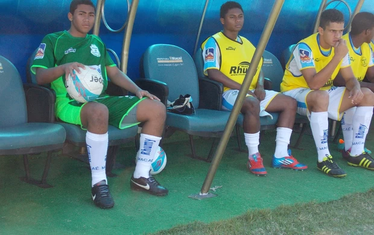

Yurilemos.Facebook
Yurilemos.Facebook  Yuri Lemos Mussi.Github
Yuri Lemos Mussi.Github Yuri Lemos Mussi.MacaeYuri
Yuri Lemos Mussi.MacaeYuri Yuri Lemos Mussi.Linkedin
Yuri Lemos Mussi.Linkedin Yuri Lemos Mussi.X
Yuri Lemos Mussi.X Yuri Lemos Mussi.YT
Yuri Lemos Mussi.YTMe chamo yuri, tenho 26 anos. Sou nascido e criado em Macae - rio de janeiro mas me mudei para california aos 19 para jogar e estudar em faculdade americana. A experiencia foi e tem sido boa e de muito crescimento. Conclui me curso de Business Management em 2022 e hoje estou proximo de concluir meu mestrado tambem. 